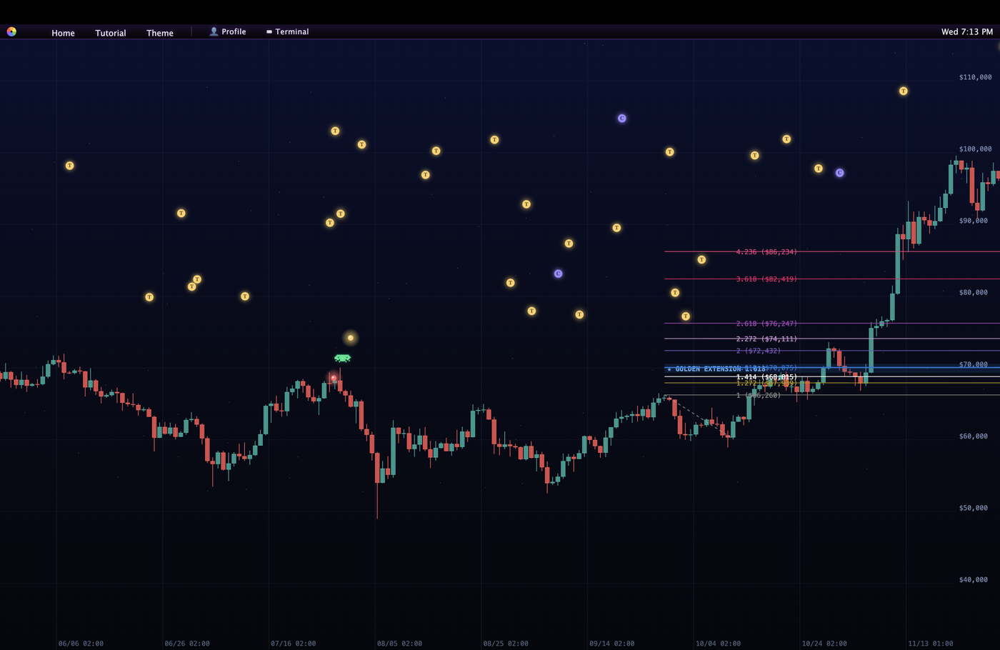
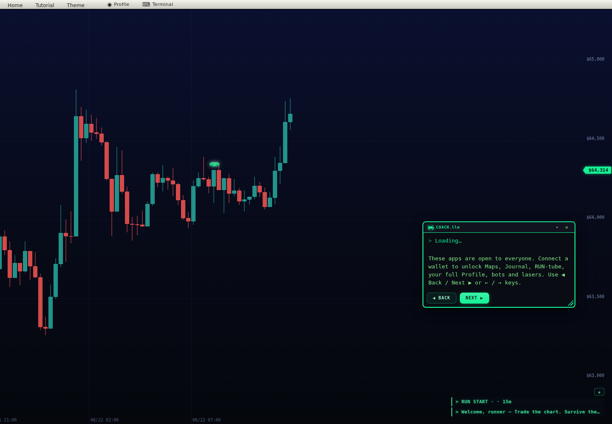

> press ▶ play to run the charts
Chartrunner.xyz
The crypto-market platformer.
Real market candles become the level. Run live charts, set up trades, and build genuine market intuition by playing it — not reading about it. Free in the browser with guest mode; connect a Solana wallet only to persist progress and record a best run.
> the loop
The market platformer — level to level.
Price is the terrain. Candle bodies are platforms, wicks are hazards, and trend is the slope you run. Read the chart with your hands instead of a textbook — no sign-up, no ads, no pay-to-win. Just press Play and run.
> pick a live market
Run a real market, right now.
These are live prices, not screenshots. Tap a market and drop straight into a run on those exact candles. Same feed, same volatility — now it is a level.
> boot the tutorial
In the game in 10 seconds.
Press Play, continue as guest, pick a mode, and run. COACH.llm rides along to explain each setup, and in-game Support is one tap away if you get stuck. Arrow keys or on-screen controls move and jump — simple enough for a phone tap, deep enough to teach price, volatility, and risk.

> run the campaign
Learn one idea at a time.
The Campaign is a guided run of bite-size chapters. Each one locks an asset and timeframe, hands you a single concept — swing failures, volume climax, VWAP reclaim — and COACH.llm teaches it through hands-on play, not a slideshow. Clear the chapter, unlock the next, build a real read of price action one level at a time.

> connect a wallet
Connect to unlock the full game.
Everything plays free as a guest. Connect a Solana wallet to claim an on-chain runner name and unlock Maps, Journal, RUN-tube, your full Profile, plus the bots and lasers. No deposit, no signing trades — it is your identity and progress layer, not a checkout. Stay a guest forever, or plug in when you want the rest.

> under the hood
Open, free, and built in public.
> faq cache
Quick answers.
Is ChartRunner free?
Yes. Press Play and you are in. No install, no sign-up, no ads, and no pay-to-win.
Do I need a wallet?
No. Play everything as a guest. A Solana wallet is optional and only for saving your profile or recording a best run if you choose.
Is this real trading?
No. Every trade inside ChartRunner is simulated. It does not touch real funds and is not financial advice.
Does it work on mobile?
Yes. ChartRunner runs in the mobile browser with on-screen touch controls.
Will I learn anything?
That is the point: the gameplay mirrors price, volatility, and risk so market instincts become physical.
> final command